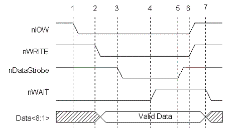
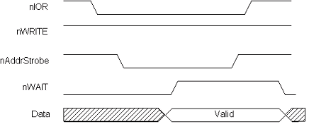

EPP Mode
The Enhanced Parallel Port protocol was originally developed by Intel, Xircom and Zenith Data Systems, as a means to provide a high performance parallel port link that would still be compatible with the standard parallel port. This protocol capability was implemented by Intel in the 386SL chipset (82360 I/O chip). This was prior to the establishment of the IEEE 1284 committee and the associated standards work.
The EPP protocol offered many advantages to parallel port peripheral manufactures and was quickly adopted by many as an optional data transfer method. A loose association of around 80 interested manufacturers was formed to develop and promote the EPP protocol. This association became the EPP Committee and was instrumental in helping to get this protocol adopted as one of the IEEE 1284 advanced modes.
Since EPP capable parallel ports were available prior to the release of the 1284 standard, there is a small deviation between the pre-1284 EPP ports and 1284 EPP protocol. This will be made clearer later.
The EPP protocol provides four types of data transfer cycles:
Data cycles are intended to be used to transfer data between the host and the peripheral. Address cycles may be used to pass address, channel, or command and control information. These cycles can be viewed as just two different data cycles. The developer may use and parse the address/data information in any method that makes sense for a particular design. Table 1 describes the EPP signals and their associated SPP signals.
|
SPP Signal |
EPP Signal Name |
In/Out |
EPP Signal Description |
|---|---|---|---|
| nSTROBE | nWRITE | Out | Active low. Indicates a write operation High for a read cycle. |
| nAUTOFEED | nDATASTB | Out | Active low. Indicates a Data_Read or Data_Write operation is in process. |
| nSELECTIN | nADDRSTB | Out | Active low. Indicates an Address_Read or Address_Write operation is in process. |
| nINIT | nRESET | Out | Active low. Peripheral reset. |
| nACK | nINTR | In | Peripheral interrupt. Used to generate an interrupt to the host. |
| BUSY | nWAIT | In | Handshake signal. When low it indicates that is OK to start a cycle (assert a strobe), when high it indicates that it is OK to end the cycle (de-assert a strobe). |
| D[8:1] | AD[8:1] | Bi-Di | Bi-directional address/data lines. |
| PE | user defined | In | Can be used differently by each peripheral |
| SELECT | user defined | In | Can be used differently by each peripheral. |
| nERROR | user defined | In | Can be used differently by each peripheral. |
Figure 1 is an example of a Data_Write cycle . The CPU signal nIOW is shown just to emphasize that this entire handshake occurs within a single I/O cycle.

Data Write cycle phase transitions:
One of the most important features to note here is that the entire data transfer occurs within one ISA I/O cycle. The effect is that by using the EPP protocol for data transfer, a system can achieve transfer rates from 500K to 2M bytes per second. In this fashion, parallel port peripherals can operate at close to the same performance levels as an equivalent ISA plug-in card. The ability to get this level of performance from a parallel port attached device is one of the major features of the EPP protocol. With interlocked handshakes, the data transfer will happen at the speed of the slowest of the interfaces, the host adapter or the peripheral device. This "speed adaptive" property is transparent to both the host and peripheral. All 1284 transfer modes are implemented with interlocking handshakes.
Interlocking refers to the criteria that each control signal transition is acknowledged by the opposite side of the interface. In the above diagram, nDataStrobe can be asserted because nWAIT is low, nWAIT deasserts in response to nDataStrobe be asserted, nDataStrobe deasserts in response to nWAIT being deasserted, and finally nWAIT asserts in response to nDataStrobe being deasserted. In this way the peripheral can control the setup time required for its operation. This is done in the following manner: the setup time is the time from the assertion of nDataStrobe to the deassertion of nWAIT, the peripherals controls this time. Interlocking also has the advantage of making the transfer cycle independent of the cable length. The Nibble, Byte, EPP and ECP modes all have interlocked protocols.
As previously mentioned, the pre-1284 EPP devices deviated from the 1284 protocol. At the start of the cycle, the nDataStrobe or nAddrStrobe would assert regardless of the state of the nWAIT signal. This means that the peripheral could not hold off the start of a cycle by having nWAIT deasserted. This is sometimes referred to as EPP 1.7, in reference to a Xircom proposal version 1.7. This is the version that Intel implemented in the original 82360 I/O controller. A 1284 EPP compatible peripheral will work properly with an EPP 1.7 version host adapter, but an EPP 1.7 peripheral may not operate properly with a 1284 compliant host. Figure 2 is an example of an Address_Read cycle.

The simplest software view of EPP is that of an extension to the register definitions for the standard parallel port. As shown earlier, the SPP consists of three registers, offset from the port's base address: Data port, Status port, and Control port. The most common EPP implementations expand this to use ports not defined by the SPP. See table 2.
| Port Name | Offset | Mode | Read/Write | Description |
|---|---|---|---|---|
| SPP Data Port | +0 | SPP/EPP | W | Standard SPP data port. No autostrobing. |
| SPP Status Port | +1 | SPP/EPP | R | Reads the input status lines on the interface. |
| SPP Control Port | +2 | SPP/EPP | W | Sets the state of the output control lines. |
| EPP Address Port | +3 | EPP | R/W | Generates an interlocked address read or write cycle. |
| EPP Data Port | +4 | EPP | R/W | Generates an interlocked data read or write cycle. |
| Not Defined | +5 to +7 | EPP | N/A | Used differently by various implementations. May be used for 16 and 32 bit I/O. |
By generating a single I/O write instruction to "base_address + 4", the EPP controller will generate the necessary handshake signals and strobes to transfer the data using an EPP Data_Write cycle. I/O instructions to the base addresses, ports 0 through 2, will cause behavior exactly as that as to a standard parallel port. This guarantees compatibility with standard parallel port peripherals and printers. Address cycles are generated when read or write I/O operations are generated to "base_address + 3".
Ports 5 through 7 are used differently by various hardware implementations. These may be used to implement 16 or 32-bit software interfaces, or used for configuration registers, or not used at all. For example, the Warp Nine Engineering's' F/PortPlus card has only an 8-bit data interface, but can be accessed using 32-bit I/O, for EPP data operations. The ISA controller will intercept the 32- bit I/O and actually generate 4 fast 8- bit I/O cycles. The first cycle will be to the addressed I/O port using byte 0 (bits 0-7), the second cycle will be to port+1 using byte 1, then port+2 using byte 2 and finally port+3 using byte 3. These additional cycles are generated by hardware and are transparent to the software. The total time for these four cycles will be less than 4 independent 8 bit cycles. For example, the F/PortPlus card (from Warp Nine Engineering) maps 4 I/O ports (offset 4 to 7) to the internal EPP Data register. This enables the software to use 32-bit I/O operations for EPP data transfer. Address cycles are still limited to 8-bit I/O.
The ability to transfer data to or from the PC by the use of a single instruction is what enables EPP mode parallel ports to transfer data at ISA bus speeds. Rather than having the software implement an I/O intensive software loop, a block of data can be transferred with a single REP_IO instruction. Depending upon the host adapter port implementation and the capability of the peripheral, an EPP port can transfer data from 500K bytes to nearly 2M bytes per second. This data transfer rate is more than enough to enable network adapters, CD ROM, tape backup and other peripherals to operate at nearly ISA bus performance levels.
The EPP protocol and current implementations provide a high degree of coupling between the peripheral driver and the peripheral. What this means is the software driver is always able to determine and control the state of communication to the peripheral at any given time. Intermixing of read and write operations as well as block transfers are readily done. This type of coupling is ideal for many register-oriented or real-time controlled peripherals such as network adapters, data acquisition, portable hard drives, and other devices.